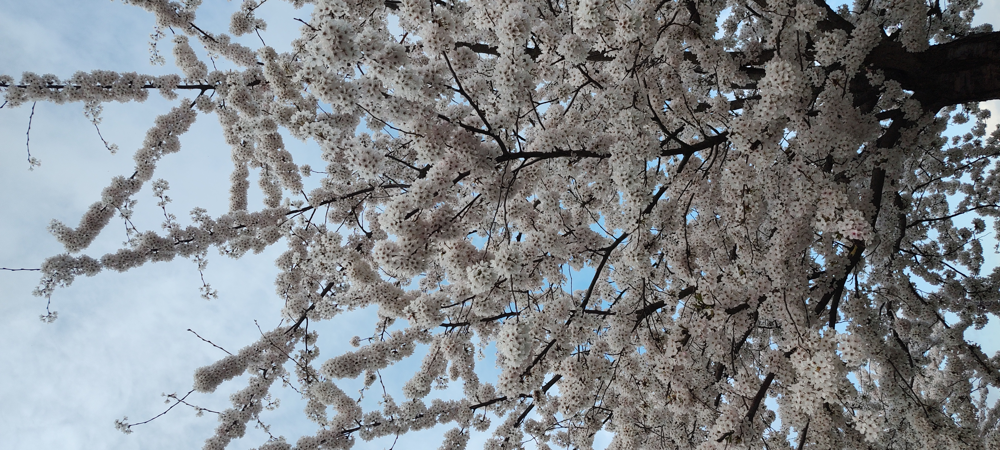

My Life in Germany
I arrived in Germany on June 26, 2023, since I started speaking in german, I have lost the ability to communicate myself in English the way I used to, so I am so sorry if I make mistakes. I decided to make the webpage in English, so everyone I know could understand it.
The most importat topic... Food!
Here is a list of my favorite food in Germany.
- Kochkeaseschnitzel
- Doener Pizza
- Spargel mit Bratkartoffeln und Speck oder Schinken
The list is not that long, as i would like it to be.
Nature and Germany
Since I moved here, maybe because of the seasons, i have fallen in love with plants, trees and last but not least... flowers!

If you would like to know more about Germany you are at the wrong web site, but under this sentence, there is a beautiful link where you can learn a lot about it. Beautiful link